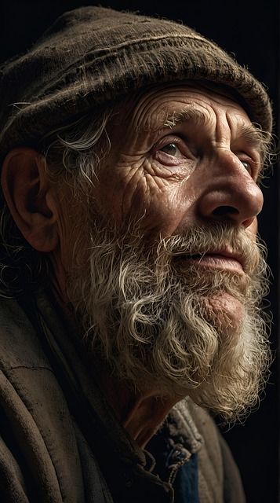
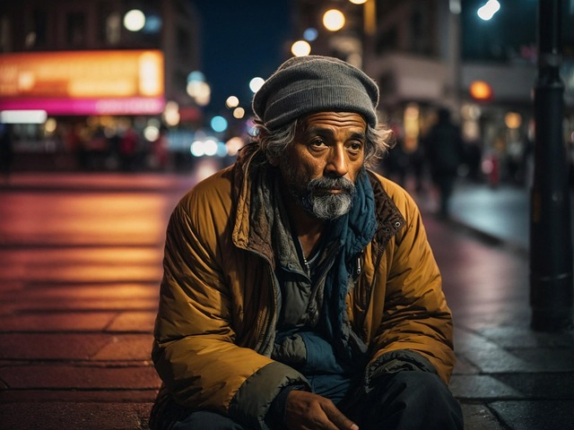

🕵️ Nyomozási Jelentés 🕵️
👥 Gyanúsítottak / Csoport Tagok

Kovács Péter Ártatlan
- Életkor: 28 év
- Magasság: 175 cm
- Hajszín: Barna
- Szemszín: Kék
- Státusz: Gyanúsított

Nagy Anna Ártatlan
- Életkor: 25 év
- Magasság: 165 cm
- Hajszín: Szőke
- Szemszín: Zöld
- Státusz: Tanú

Szabó Gábor Ártatlan
- Életkor: 32 év
- Magasság: 180 cm
- Hajszín: Fekete
- Szemszín: Barna
- Státusz: Gyanúsított
Horváth Mária Ártatlan
- Életkor: 29 év
- Magasság: 160 cm
- Hajszín: Vörös
- Szemszín: Kék
- Státusz: Tanú

Tóth László Ártatlan
- Életkor: 45 év
- Magasság: 178 cm
- Hajszín: Ősz
- Szemszín: Szürke
- Státusz: Tanú
Kiss Eszter Ártatlan
- Életkor: 26 év
- Magasság: 172 cm
- Hajszín: Barna
- Szemszín: Mogyoró
- Státusz: Tanú
🕵️ Nyomozó Detektívek

Varga Zsolt Vezető nyomozó
- Tapasztalat: 15 év
- Születési év: 1975
- Hajszín: Fekete
- Specialitás: Komoly ügyek
- Kikérdezések: 3 fő
Molnár Kata Nyomozó
- Tapasztalat: 8 év
- Születési év: 1985
- Hajszín: Szőke
- Specialitás: Tanúkihallgatás
- Kikérdezések: 3 fő
Balogh István Főnyomozó
- Tapasztalat: 22 év
- Születési év: 1968
- Hajszín: Ősz
- Specialitás: Veterán nyomozó
- Kikérdezések: 2 fő
Fekete Judit Junior nyomozó
- Tapasztalat: 5 év
- Születési év: 1990
- Hajszín: Barna
- Specialitás: Részletes kihallgatás
- Kikérdezések: 2 fő